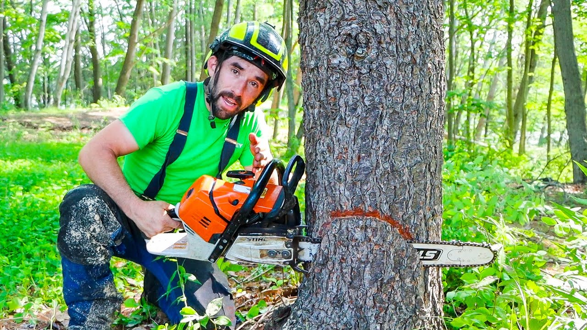

06 / több, mint egy távoli erdő
Ami eltűnik, nem csak egy fa.

Az erdő feldarabolódása a megmaradt élőhelyeket is megváltoztatja.
Az erdő helyén más táj
Mezőgazdasági terjeszkedés, fakitermelés, bányászat és utak: az erdőirtás okai térségenként eltérnek, és gyakran összeadódnak.
Elszigetelt élőhelyek
A megmaradt erdőfoltok között nehezebb a fajok mozgása. A széleken a táj szárazabbá, sérülékenyebbé válhat.
Melegedés és tűz
A szárazabb időszakok és az ember által gyújtott tüzek egymást erősíthetik. A sérült erdő nehezebben áll helyre.
Ami valóban segít
A meglévő erdők védelme az
első.
Ezt egészíti ki az őshonos élőhelyek
helyreállítása és az őslakos, helyi közösségek jogainak tisztelete.
07 / A változás közelebb van
Távoli erdők. Közeli döntések.
Nem kell mindent egyszerre megváltoztatnod. Válassz egy szokást, amelyet tartósan alakítasz át. Az egyéni döntések mellett vállalati és közpolitikai változásra is szükség van.
01
Vásárolj kevesebbet, tudatosabban.
Javíts, használj újra, és keresd az alapanyagok eredetét. Fa és papírtermékeknél tájékozódj az FSC tanúsításról.
Következő lépés: nézd meg egy termék címkéjét.
02
Adj több helyet a növényeknek.
Tervezd meg az étkezéseidet, csökkentsd az élelmiszer pazarlást, és próbálj ki több növényi alapú fogást.
Következő lépés: tervezz egy húsmentes napot.
03
Kérdezz rá az ellátási láncra.
Kávénál, kakaónál és pálmaolajnál keresd az átlátható beszerzést. A tanúsítás segítség, de nem önmagában garancia.
Következő lépés: olvass el egy beszerzési vállalást.
04
Támogasd a hosszú távú védelmet.
Keress hiteles természetvédelmi szervezeteket. Értékeld az átlátható eredményeket és a helyi közösségek bevonását.
Következő lépés: ismerj meg egy helyi programot.
A megismerésből
gondoskodás lesz
Az erdő jövője nem egyetlen nagy gesztuson múlik. Kezdj egy tudatos döntéssel, és add tovább, amit megtudtál..
Kíváncsiság ma. Tudatosabb döntések holnap.